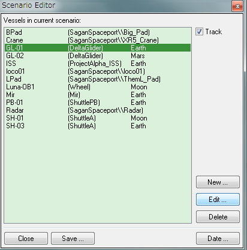
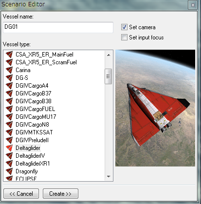

シナリオエディタ 宇宙船の追加
シナリオエディタを使って、既存のシナリオに新しく宇宙船を追加したり、削除したりできます。

右上のTrackにチェックが入っていると、選択した宇宙船にカメラが移動する。
宇宙船を削除する
リストから選択して、右下のDeleteをクリックすると、既存の宇宙船を消去できる。
重要：ゲームが強制終了する場合、不具合の原因になっている宇宙船を削除すると復旧できることがある。
宇宙船を追加する
シナリオエディタを開いて、Newをクリック。

リストから追加したい宇宙船・宇宙ステーションを選んでVessel nameに名前を入力。
左下のCreateをクリックすると、宇宙船が追加される。
右上のSet cameraにチェックが入っていると、追加した宇宙船にカメラが移動する。
Set input focusにチェックを入れておくと、追加した宇宙船をそのまま操作できる。
その他のケース
Spacecraft3.dllを利用する宇宙船の場合は、あらかじめConfigファイルを作成しないとリストに表示されない。
Spacecraft3.dll+Multistage2.dll+Stage.dllのダウンロード
複数のモジュールから構成される宇宙船・宇宙ステーションを追加する場合は、シナリオファイルを直接編集する必要がある。
シナリオファイルの直接編集